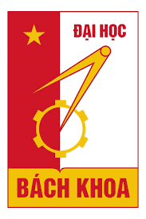
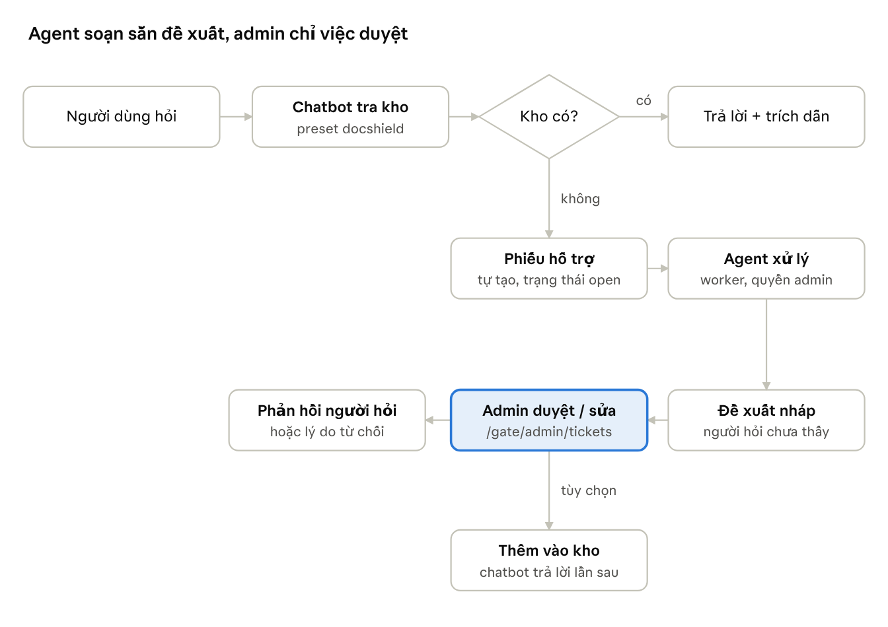

| Sinh viên thực hiện: | Mai Chí Kiên – 20235127 |
| Lớp: | IT1-05 |
| Giảng viên hướng dẫn: | Nguyễn Bình Minh |
Đề tài xây dựng agent hỗ trợ cán bộ quản trị DocShield xử lý phiếu hỗ trợ. Phiếu sinh ra khi chatbot tra cứu không trả lời được; agent chẩn đoán, tìm lại, soạn đề xuất kèm trích dẫn và phiếu lý do, admin duyệt, sửa hoặc từ chối.
Kho gồm 24 PDF công khai của ĐHBK Hà Nội (quy chế đào tạo, học phí 2025–2026 và 2026–2027, học bổng…), trong đó 4 bản cũ được giữ lại để tạo câu hỏi “văn bản cũ/mâu thuẫn”. 10 bản scan được OCR bằng ocrmypdf + Tesseract tiếng Việt vì DocShield không có OCR; cả 24 file đã nạp vào kho chung. Sáu chủ đề cố ý không có trong kho: ký túc xá, BHYT, cách chấm điểm rèn luyện, cấp lại thẻ sinh viên, lịch nghỉ Tết 2027, học phí 2027–2028.
Bộ 64 câu hỏi có đáp án và bằng chứng nguyên văn (đã kiểm tra khớp kho 100%), mỗi câu gắn một trong 6 nhãn theo lý do chatbot dễ trượt, chia dev/test theo nhãn:
| Nhãn | Ý nghĩa | Dev | Test |
|---|---|---|---|
| truc-tiep | Có sẵn, hỏi thẳng | 9 | 4 |
| tim-kiem-truot | Kho có nhưng khác từ ngữ | 10 | 5 |
| nhieu-buoc | Cần ghép nhiều đoạn hoặc tính toán | 11 | 5 |
| cu-mau-thuan | Có văn bản cũ/mới | 6 | 3 |
| mo-ho | Câu hỏi mơ hồ, cần hỏi lại | 4 | 1 |
| thieu | Kho không có | 4 | 2 |
| Tổng | 44 | 20 |
Chấm tự động bằng giám khảo qwen3:8b (nhãn: đúng / một phần / từ chối / sai / bịa) cộng luật kiểm tra trích đúng nguồn; khoảng 20% kết quả sẽ được chấm tay để đối chiếu.
Chatbot (preset docshield, qwen3:8b chạy local) đúng 27/44 câu (61%) và bịa 4 câu; yếu nhất ở câu mơ hồ (bịa 3/4) và câu nhiều bước (đúng 5/11). Chỉ 7/17 câu hỏng sinh phiếu hỗ trợ — 10 câu còn lại chatbot trả lời thiếu hoặc bịa mà không chuyển phiếu.
| Nhãn | Số câu | Đúng | Một phần | Từ chối | Bịa | Lỗi chạy |
|---|---|---|---|---|---|---|
| truc-tiep | 9 | 8 | 0 | 0 | 1 | 0 |
| tim-kiem-truot | 10 | 6 | 2 | 2 | 0 | 0 |
| nhieu-buoc | 11 | 5 | 3 | 2 | 0 | 1 |
| cu-mau-thuan | 6 | 4 | 1 | 1 | 0 | 0 |
| mo-ho | 4 | 0 | 1 | 0 | 3 | 0 |
| thieu | 4 | 4 | 0 | 0 | 0 | 0 |
| Tổng | 44 | 27 | 7 | 5 | 4 | 1 |
Trung bình mỗi câu: 2,3 lượt gọi model, 7.827 token, 198 giây; trích đúng file nguồn 22/38 câu có bằng chứng. Với nhãn thieu, “đúng” nghĩa là chatbot từ chối đúng và chuyển phiếu.
Với qwen3:8b, agent không tốt hơn chatbot: H1 cứu 3/17 câu H0 hỏng nhưng bịa thêm 4 câu, và thêm kế hoạch (H2) hay subagent (H3) không giúp. Đổi sang model API (DeepSeek V4 Flash) thì agent cứu 3/5 câu thử, không bịa, nhưng tốn khoảng 120 nghìn token mỗi câu.
Cấu hình: H1 = tìm lại nhiều lượt + chạy mã; H1v2 = H1 sau khi sửa prompt; H2 = H1 + lập kế hoạch/todo; H3 = H2 + subagent. Agent xuất phiếu đề xuất JSON (chẩn đoán, câu trả lời, trích dẫn, đề xuất cập nhật kho, phiếu lý do, độ tin cậy).
| Cấu hình | Model | Chạy trên | Số câu | Đúng | Một phần | Bịa | JSON hợp lệ | Kiểm chứng | Token TB | Giây TB |
|---|---|---|---|---|---|---|---|---|---|---|
| H1 | qwen3:8b | toàn bộ dev | 44 | 22 | 12 | 7 | 41/44 | 35/44 | 16.777 | 477 |
| H1v2 | qwen3:8b | câu H1 sai | 22 | 7 | 7 | 5 | 19/22 | 14/22 | 19.977 | 561 |
| H2 | qwen3:8b | 12 câu khó | 12 | 4 | 2 | 2 | 7/12 | 6/12 | 20.694 | 597 |
| H3 | qwen3:8b | 12 câu khó | 12 | 5 | 2 | 1 | 11/12 | 10/12 | 21.315 | 642 |
| H1api | DeepSeek V4 Flash | 5 câu H0 hỏng | 5 | 3 | 2 | 0 | 5/5 | 5/5 | 120.284 | 202 |
Trên cùng 12 câu khó, số câu đúng (bịa): H0 7 (0), H1 6 (2), H2 4 (2), H3 5 (1).
| Agent | Câu H0 hỏng được chạy | Cứu được | Bịa |
|---|---|---|---|
| H1 (qwen3:8b) | 17 | 3 | 4 |
| H1v2 (qwen3:8b) | 14 | 4 | 4 |
| H1api (DeepSeek V4 Flash) | 5 | 3 | 0 |
Ngược lại, trên 27 câu H0 đã đúng, H1 (8B) làm hỏng 8 câu — lý do agent chỉ nên chạy trên phiếu, không thay chatbot.
Vì sao tốn token: mỗi lượt gọi model gửi lại toàn bộ ngữ cảnh (system prompt, mô tả khoảng 15 nhóm tool, các đoạn tài liệu đã tìm). DeepSeek làm trung bình 6,2 lượt × ~17.800 token đầu vào; 92% token là đầu vào. Có thể giảm bằng cách bỏ tool thừa và giảm số đoạn trả về mỗi lần tìm.
Ví dụ (câu q29, học phí 20 tín chỉ ngành KHMT năm 2026–2027): chatbot tìm 1 lần rồi chuyển phiếu; agent DeepSeek tìm 4 truy vấn, loại văn bản học phí 2025–2026 đã cũ, chạy Python 20 × 700.000 = 14.000.000 đồng, xác minh 2 trích dẫn nguyên văn, chẩn đoán nhieu-buoc.
Luồng phiếu đã chạy thật từ đầu đến cuối: người dùng hỏi, chatbot tạo phiếu, agent tự soạn đề xuất trong vài chục giây, admin duyệt trên web, người hỏi thấy phản hồi.

p3-h1/h2/h3 chạy dưới tài khoản dịch vụ admin, đọc phiếu thật kèm đoạn chat của chatbot (đã tìm gì, tìm được gì). Agent không có tool ghi (không tự trả lời người hỏi, không sửa kho) — quyết định cuối thuộc admin.eval.py tickets (agent xử lý phiếu thật do H0 tạo), reask (hỏi lại sau bồi đắp), chỉ số “cứu câu H0 hỏng”. Unit test: gate 91/91, DocShield 119/120 (1 test cũ lỗi sẵn, không liên quan).Chạy thật (TICK-116): người dùng hỏi phí ký túc xá (chủ đề kho cố ý thiếu). Agent gemini-3.5-flash-lite xử lý trong 37 giây, 51 nghìn token: chẩn đoán đúng thieu, không bịa số, đề xuất bổ sung văn bản phí ký túc xá, độ tin cậy cao.
Vấn đề lớn nhất: khi chatbot dùng model mạnh, việc agent “tìm lại trong cùng kho” mang lại rất ít — phiếu còn lại chủ yếu là kho thiếu, mà tìm lại bao nhiêu cũng không ra.